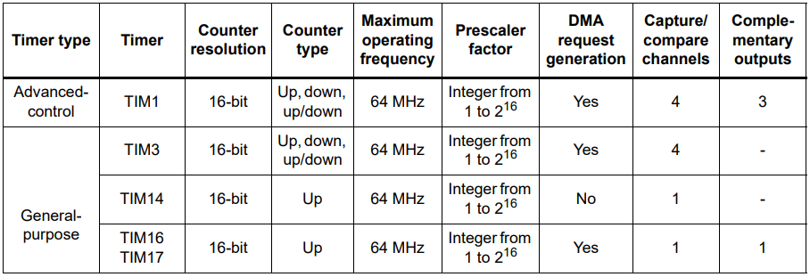
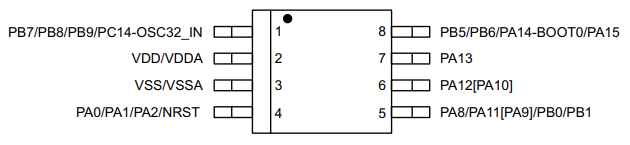
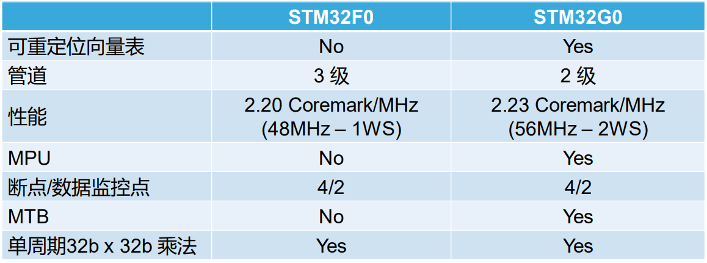
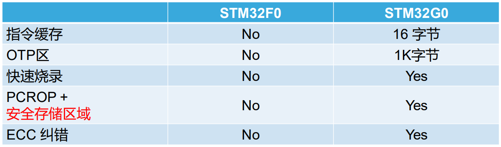
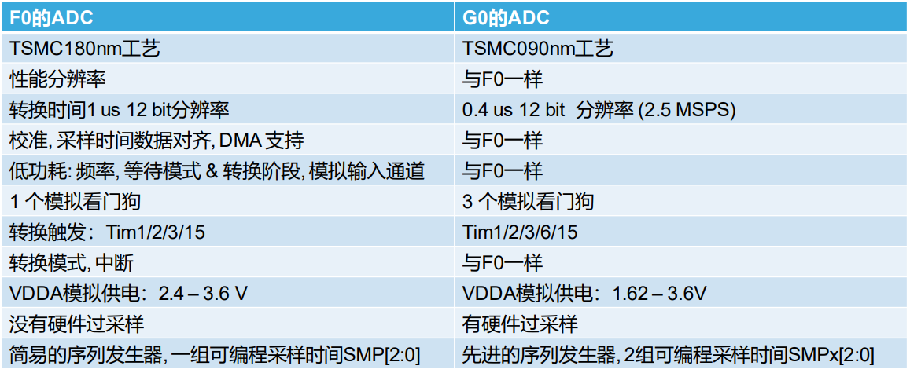

STM32G030¶
ST : Cortex-M0 64MHz I2S BaseLine RTC 12-bit ADC 2.5Msps
Xin简介¶

基本参数¶
发布时间：
官方价格：$0.8
制程工艺：90 nm
供货周期：
封装规格：LQFP48/LQFP32/TSSOP20/SON8
运行环境：-40°C to +85°C
RAM容量：8 KB
Flash容量：32/64 KB

特征参数¶

RCC¶
HSI 16 MHz
LSI 32 kHz(±5 %)
STM32G031 系列的HSI精度有提升到±1%
Timer¶
电源体系¶
供电电压: 2.0 to 3.6 V
运行功耗: 100μA/MHz
低功耗模式¶
封装尺寸¶
SON8¶
封装尺寸(STM32G030J6)：4.9 x 6 mm
作为新推出的小封装型号，配备非常丰富的资源非常有针对性，针对单位IO的性能在一段时期内不会落后
Xin选择¶
品牌对比¶
这个规格范围的国产替换方案非常多，如果不是为了一些特殊的功能外设和参数，也不追求极致的价格优化，STM32G030系列是一个不错的选择，当然在实际选择时，还需要同步考虑市场供应因素。
系列对比¶
相对前代 STM32F030 系列进行了升级，拥有更好的模拟性能，主频更高同时如CRC等外设全系标配，相对市场同类产品，拥有自家完善的资源体系和可靠性，是新推出的 高性价比 的国际一线品牌MCU。
核心更新¶
存储更新¶
ADC更新¶
型号对比¶
作为入门级超值产品，STM32G030同族的还包括STM32G050、STM32G070和STM32G0B0，除了常规的SRAM和Flash差异，STM32G0B0支持 USB FS
Note
就官方给出的定价而言，STM32G030差不多是STM32所有系列中最低的，是获得STM32生态便利的低成本首选。
官方定价¶

外设资源¶

STM32G070¶
相对STM32G030系列的8K SRAM提升到36K，更高规格配置144K SRAM的STM32G0B0
替换方案¶
由于STM32G0系列是ST最近推出的产品，所有不会存在明显落后的情况，更多的替换需求来源功能/产品的衍生和市场因素
升级方案¶
STM32G030 并不支持USB PD功能，如果需要该功能的升级，可以选择参考方案 USB Type-C™ and Power Delivery
降本方案¶
STM32G030 由于已经是STM32系列中成本最低的系列之一了，更多可能的降本方案为市场供给导致，更多可以选择国产 Cortex-M0 入门级产品，可参考 F030范式
Xin应用¶
Note
STM32G030系列的FLASH和RAM资源都相对受限，虽然可以运行FreeRTOS（基于CMSISv1），但8K SRAM并不是RTOS理想载体。
硬件资源¶
开发板A¶

工具资源¶
使用STM32芯片最直接方式是通过 stm32cube 工具构建基本运行体，不用开发者自己去研究寄存器初始化相应外设（但请注意使能）。
PlatformIO¶
如果你要探索一些开源项目，可基于 PlatformIO 构建的工程，通过跨平台编译，直接在编辑器中集成，可以云端部署，比常用的IDE拥有更多的灵活性。 源圈OS-Q 先验证 PlatformIO STM32G0 Enhanced
功能使用¶
CRC¶
输入翻转 输出翻转 长度可调 多项式可调
循环冗余校验(CRC：Cyclic Redundancy Check)是一种错误检测算法，通常在通信协议中或存储设备中用于检测原始数据的意外变动。 可以简单理解成对有用数据按照一定的算法进行计算后，提取出一个特征值，并附加在有用数据后。 在应用中将有用数据按照特定的算法提取特征值与预先存储的特征值进行比对，如相等则校验通过，反之校验失败，从而识别出数据是否异常。
uint32_t HAL_CRC_Calculate(CRC_HandleTypeDef *hcrc, uint32_t pBuffer[], uint32_t BufferLength);
//累积CRC计算数值,不清空之前的计算数值
uint32_t HAL_CRC_Accumulate(CRC_HandleTypeDef *hcrc, uint32_t pBuffer[], uint32_t BufferLength);
内置一个CRC-32硬件计算单元，配置CRC-16/MODBUS：
width=16 poly=0x8005 init=0xffff refin=true refout=true xorout=0x0000 check=0x4b37 residue=0x0000
static void MX_CRC_Init(void)
{
hcrc.Instance = CRC;
hcrc.Init.DefaultPolynomialUse = DEFAULT_POLYNOMIAL_DISABLE;
hcrc.Init.GeneratingPolynomial = 0x8005;
hcrc.Init.CRCLength = CRC_POLYLENGTH_16B;
hcrc.Init.InitValue = 0xFFFF;
hcrc.Init.DefaultInitValueUse = DEFAULT_INIT_VALUE_DISABLE;
hcrc.Init.InputDataInversionMode = CRC_INPUTDATA_INVERSION_BYTE;
hcrc.Init.OutputDataInversionMode = CRC_OUTPUTDATA_INVERSION_ENABLE;
hcrc.InputDataFormat = CRC_INPUTDATA_FORMAT_BYTES;
if (HAL_CRC_Init(&hcrc) != HAL_OK)
{
Error_Handler();
}
}
__IO uint16_t uwCRCValue = 0;
uint16_t uwExpectedCRCValue = 0xCB91; //高位在左低位在右，使用时请注意高低位顺序
...
static const uint8_t aDataBuffer[BUFFER_SIZE] =
{
0x1, 0x2, 0x3, 0x4, 0x5, 0x6,0x7,0x8, 0x9, 0xa, 0xb, 0xc,0xd, 0xe,
};
uwCRCValue = HAL_CRC_Calculate(&hcrc, (uint32_t *)aDataBuffer, 14);
if (uwCRCValue != uwExpectedCRCValue)
{
}
...
生成多项式：当进行CRC检验时，发送方和接受方事先约定一个除数，即生成多项式G（x），常用的CRC码的生成多项式为：
CRC8=X8+X5+X4+1
CRC-CCITT=X16+X12+X5+1
CRC16=X16+X15+X5+1
CRC12=X12+X11+X3+X2+1
CRC32=X32+X26+X23+X22+X16+X12+X11+X10+X8+X7+X5+X4+X2+X1+1
每一个生成二项式与一个二进制序列对应，如CRC8对应的二进制序列为：100110001 (X8+X5+X4+1)
UART¶
基于STM32CubeMX生成HAL库工程
uint8_t RxData; //中断接收串口1数据
void HAL_UART_RxCpltCallback(UART_HandleTypeDef *huart)
{
if(&huart1 == huart) {
HAL_UART_Receive_IT(huart, &RxData, 1);
}
}
void HAL_TIM_PeriodElapsedCallback(TIM_HandleTypeDef *htim)
{
if(htim==(&htim17)) //定时器中断函数
{
g_run_tick++;
}
}
int main(void)
{
/* USER CODE BEGIN 2 */
HAL_UART_Receive_IT(&huart1, &RxData, 1); //中断接收使能
HAL_TIM_PWM_Start(&htim16,TIM_CHANNEL_1); //PWM输出使能
HAL_TIM_Base_Start_IT(&htim17); //定时器使能
/* USER CODE END 2 */
while (1)
{
/* USER CODE BEGIN 3 */
HAL_GPIO_TogglePin(LED_GPIO_Port, LED_Pin);
HAL_Delay(500);
}
/* USER CODE END 3 */
}
RTC¶
BKP RTC
通常通过后备寄存器写入标记判断是否已经初始化RTC时钟，如果已经初始化了就不再重复初始化
if (HAL_RTC_Init(&hrtc) != HAL_OK)
{
Error_Handler();
}
/* USER CODE BEGIN Check_RTC_BKUP */
if(HAL_RTCEx_BKUPRead(&hrtc, RTC_BKP_DR1) == 0x1234) return; //如果已设定则不再初始化
else HAL_RTCEx_BKUPWrite(&hrtc,RTC_BKP_DR1,0x1234); //如果未设定过RTC时间，则初始化
/* USER CODE END Check_RTC_BKUP */
在使用STM32CubeMX生成LL库文件时，屏蔽复位备份寄存器时钟域复位，维持备份寄存器正常
LL_PWR_EnableBkUpAccess();
if(LL_RCC_GetRTCClockSource() != LL_RCC_RTC_CLKSOURCE_LSI)
{
// LL_RCC_ForceBackupDomainReset();
// LL_RCC_ReleaseBackupDomainReset();
LL_RCC_SetRTCClockSource(LL_RCC_RTC_CLKSOURCE_LSI);
}
Note
备份寄存器共 20 bytes，实际读取 RTC_BKP_DR0 - RTC_BKP_DR4 这5个32bit寄存器
ADC¶
Hint
注意传入ADC通道的电压不超过参考电压，也不能超过 3.3V
ADC初始化后要进行校准，放在ADC初始化函数后面校准
if (HAL_ADCEx_Calibration_Start(&hadc1) != HAL_OK)
{
while(1); /* Calibration Error */
}
轮询方式读取ADC值 轮询
HAL_ADC_Start(&hadc1);
HAL_ADC_PollForConversion(&hadc1,0xffff); //等待ADC转换完成
uint32_t aADCxConvertedData = HAL_ADC_GetValue(&hadc1); //轮询Vrefint通道
VrefData = __LL_ADC_CALC_VREFANALOG_VOLTAGE(aADCxConvertedData,ADC_RESOLUTION_12B); //转换为电压：单位mv
同时开多个通道进行轮询，需要正确配置配置Rank的输入通道：扫描模式+单次转换+间断转换模式。 多通道
for(i=0;i<2;i++)
{
HAL_ADC_Start(&hadc1);
HAL_ADC_PollForConversion(&hadc1,0xffff);//等待ADC转换完成
adcBuf[i]=HAL_ADC_GetValue(&hadc1);
}
HAL_ADC_Stop(&hadc1);
VrefData = __LL_ADC_CALC_VREFANALOG_VOLTAGE(aADCxConvertedData[0],ADC_RESOLUTION_12B);
Tempruate=__HAL_ADC_CALC_TEMPERATURE(VrefData,aADCxConvertedData[1],ADC_RESOLUTION_12B); //轮询内部温度通道
Note
查询有可能会丢失数据，扫描模式是在配置为多个通道必须打开的！
单次模式和连续模式：单次模式下会把这四个通道采集一边就停止了，而连续模式就是这四个通道转换完以后再循环过来再从ch0开始。
STM32大多数产品ADC属于SAR型（逐次逼近型），转换需要一定的时间，尤其是需要多个通道同时转换的场合，不同的程序设计方式对系统效率有着极大的影响，通过DMA方式可以提高转换率。
假设每次adc采样需要1us，采样率8k，每次采样需要采4个通道，使用阻塞的方式进行AD转换，如果这4个通道共用一个ADC，那么AD转换将会占用系统约3%的资源，若这4个通道每个通道用一个ADC，那么4个通道的转换可以并行进行，系统资源占用降到了1%以下，如果4个通道采样使用DMA实现，系统资源占用可以忽略。
HAL_ADC_Start_DMA(&hadc1, (uint32_t*)&aADCxConvertedData, 4); //启用DMA的ADC转换，其中数量4为通道数量
如果配置的Rank在开启的通道中不连续，DMA无法将转换的数据传到对应的缓冲区，也就和无法读取到该通道的数据
Warning
ADC是12位的，只需要用Half Word就可以，但 HAL_ADC_Start_DMA(ADC_HandleTypeDef* hadc, uint32_t* pData, uint32_t Length) 函数中pData为32位的，DMA参数必须配置Word。
开源应用¶
更多开源趋势可查看 热度Xin
Arduino¶
关于 ST MCU构建的 STM32G0开源资源 ，其中最主要的包括 Arduino ，STM32也是Arduino的最佳运行平台之一。
Rust¶
Xin总结¶
能力构建¶
STM32G0系列沿用成熟的STM32开源工具和资源，通过STM32CubeMX进行构建，全体系工具链可跨平台使用。
要点提示¶
STM32G0系列属于较新的产品，也重点优化了ADC的性能，相较于使用最广泛的STM32F1系列，在ADC初始化阶段需要更长的时间，所以在采样的时候需要过滤开始阶段无效的数据。
Warning
SON8封装由于管脚复用，注意烧录口使能，小心变砖
问题整理¶
相较以往STM32的boot模式，新的G0系列芯片出厂默认从system flash启动，boot0管脚无论拉高或拉低都不能从系统存储区（system flash）启动（进入bootloader状态），也就是说如果烧录的程序没有配置SYS调试端口，将无法通过传统的boot0拉高来连接烧录器。
如果要使能boot 0的功能，需要修改option bytes，将nboot_sel后面的勾选去掉，断电复位，此时芯片的启动方式就由boot0引脚决定了，上拉boot0进bootloader模式。
一不小心就把芯片锁死弄成砖了，可以将PA0（NRST）接地，然后在连接STM32CubeProgrammer前断开接地，这是MCU可以被识别到，然后进行擦除或修改option bytes